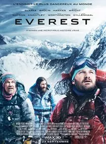
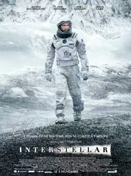

On peut considérer de prime abord, le film comme encore un de ses énièmes films d'aventure, un peu façon fin du monde 2012. Mais si c'est ce que vous souhaitez aller voir, faites demi tour! Ce film est surtout à mon sens basé sur une histoire vraie, une histoire de dépassement, une histoire de combat. Entre des images à couper le souffle (à voir en 3D), un excellent son et un casting impeccable, everest ne laisse pas indifférent.. Néanmoins, le scénario n'a rien d'inattendu, mais ce film porté par ce casting impressionnant, laisse réfléchir à des questions existentielles sur soi même, la nature, et le dépassement de soi. Bref, je conseille ce film en 3D pour passer un bon moment, et se croire sur la pointe la plus haute de l'Everest...
Interstellar
Christopher Nolan, 5 novembre 2014 (2h49)

Aucun film de Christopher Nolan ne m'a jusqu'ici déçu, pourtant, j’appréhendais cet Interstellar ! Le fait de revoir Memento et Inception récemment m'on décidé à me lancé dans ce périple, bien m'en a pris. Aucun temps morts, les palpitations s'accroissent de minute en minute et atteignent leurs maximum dans cette dernière demi-heure tout en surprise et rebondissement. Ce film est une claque, à tout point de vue, j'ai été séduis de A à Z ... Aucunement utile de poursuivre cet critique, laissé passer la pilule, attendre et le revoir dans les années à venir !